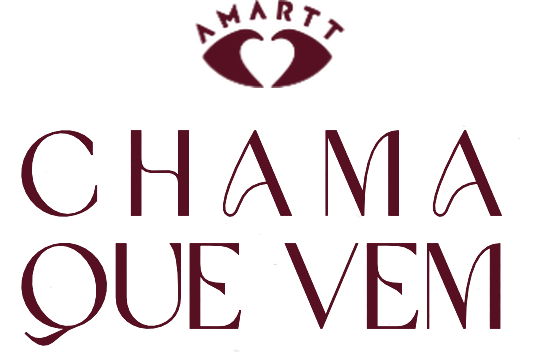
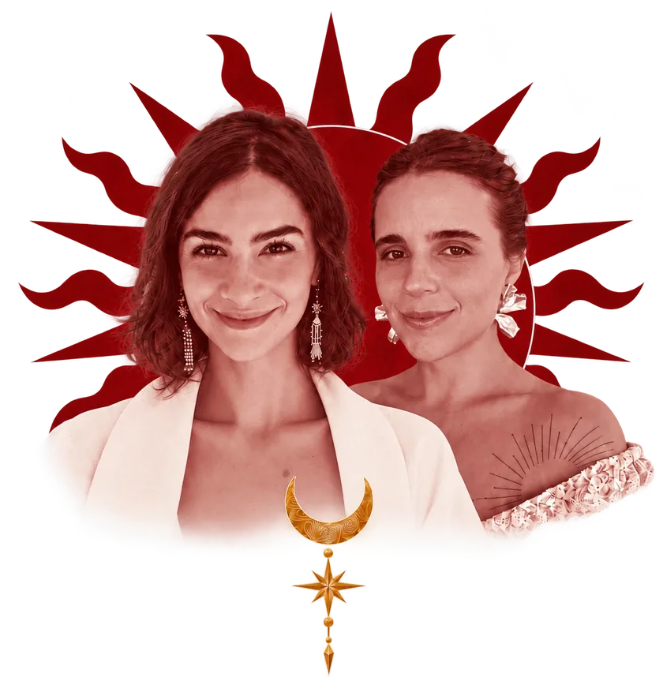
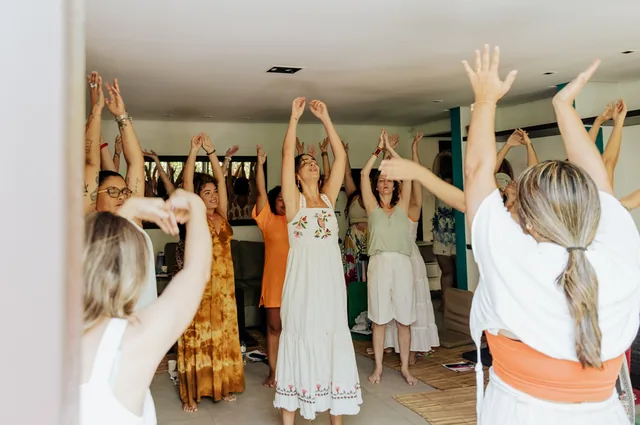
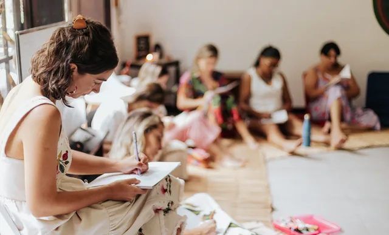
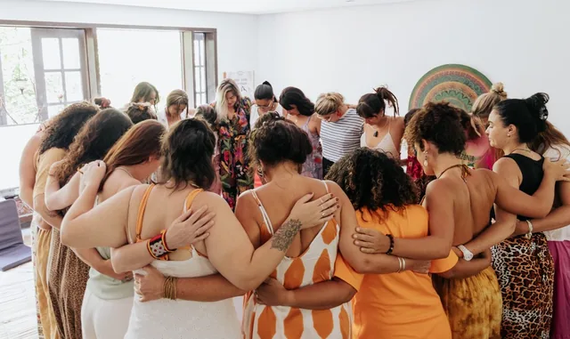
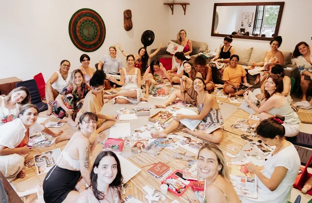
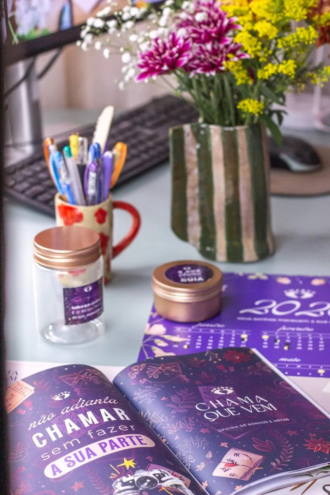
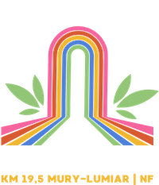

Serra carioca · Yoga e criatividade · Metas 2027

Um dia para intencionar seu novo ano!

O convite
Uma pausa revitalizante para iniciar um novo ano alinhada aos seus desejos e propósito.
Yoga, meditação, dinâmicas em grupo, atividades criativas mão na massa e muita cura para abrirmos 2027 com chave de ouro!
Em meio à natureza da serra carioca, no EcoSítio Arco-íris, em Lumiar — Nova Friburgo/RJ. Um dia inteiro longe da correria, entre mulheres que sonham e realizam.
O Chama Que Vem existe desde 2017 e já teve mais de 30 edições entre online e presencial. Dessa vez, subimos a serra carioca para um dia imersivo na natureza.
O que vamos vivenciar
Um dia construído em camadas: corpo, memória, criação e intenção. Tudo com o jeito Amartt e Ju Sancho de conduzir — criativo, com conexão, acolhimento e muita mão na massa.

Yoga & meditação
Nossa coprodutora, Julia Sancho, abre o dia com uma prática de yoga e meditação para respirarmos, desacelerarmos e aterrissarmos de verdade na serra.

Autoconhecimento
Momento de olhar para o ano que passou, ressignificar espaços internos e fortalecer suas potências — o que você quer levar pra 2027 e o que fica pra trás.

Acolhimento
Uma roda de verdade: espaço pra falar, pra ouvir e pra ser ouvida. É onde a gente percebe que não está sozinha — e onde nascem conexões, parcerias e amizades que seguem depois do dia.

Mapa de Metas 2027
Carreira, família, amor: você sai com o seu Mapa de Sonhos & Metas construído no papel, com as próprias mãos — e com o Kit Mágico pra continuar em casa.
Kit Mágico
Cada participante recebe o Kit Mágico: a papelaria autoral do Chama Que Vem, com todas as páginas das dinâmicas que faremos juntas.
Planejar, aqui, não é preencher planilha fria. É um ritual — papel, caneta, cor e tempo pra sentir onde a sua vida quer ir. Por isso cada peça é pensada pra ser vivida com presença, não preenchida no automático.
Você leva o kit pra casa. Ele continua trabalhando com você o ano inteiro.
✦ Incluso no seu ingressoQuem já viveu o Chama Que Vem confirma
É sempre incrível, parei para ver meu Mapa de Metas e percebi que realizei muitaaa coisa linda que coloquei nele, SURREAL!
Larissa LuzEu amei participar, foi uma das primeiras vezes que fiquei longe de casa. Foi lindo, me senti super acolhida. Foi importante me dar aquele espaço para sonhar!
FranciscaVocê não sabe o quanto esse momento é importante pra mim, meu último Mapa de Metas foi realizado por completo.
TaináIngressos
São vagas limitadas — o espaço comporta um grupo pequeno, e é assim que esse dia funciona.
Ingresso
12 de dezembro · 9h às 17h · Lumiar — NF/RJ
Valor do 1º lote · até 30/11
2º lote a partir de 01/12, nos 12 dias finais antes do encontro. Quem quiser dormir na serra, temos hospedagem no próprio EcoSítio em quartos duplos, triplos e quádruplos — veja nas perguntas frequentes.
Programação
Das 9h às 17h, com almoço e lanche da tarde inclusos. Um dia desenhado para começar no corpo e terminar no papel.
9h00
Acolhimento no EcoSítio Arco-íris, café e a abertura da nossa roda.
9h30
Prática inicial conduzida por Julia Sancho, para respirar, desacelerar e chegar de verdade.
11h00
Fechamento do ciclo: o que foi vivido em 2026, o que fica e o que vai embora.
13h00
Incluso no seu ingresso. Um respiro real no meio do dia, com tempo de conversa e de natureza.
14h00
A dinâmica criativa mão na massa: carreira, família e amor no papel, com o Kit Mágico.
15h30
Partilhas, lanche da tarde e o ritual de fechamento do nosso dia.

O encontro pode se estender um pouco além das 17h — reserve o dia inteiro e venha sem pressa.
Facilitadoras
Mentora de negócios · Estrategista de marca
Sou mentora de negócios e estrategista de marca, atuo no digital há 10 anos e sou fundadora do Chama Que Vem, que existe desde 2017 — e também estou à frente da Imana.
Me realizo contribuindo para o desabrochar de pessoas e marcas: o reencontro do chamado do coração com a nossa força de realização.
Hoje moro em Lumiar — NF com meu marido e minha filha, um sonho manifestado. Amo uma boa trilha, um dia na cachu e também um sofá relax.
Lívia AmarttProfessora de yoga · Fundadora SOMA Yoga Shala
Apaixonada por yoga e fundadora do SOMA Yoga Shala, seu espaço de práticas em Nova Friburgo, ativo desde 2020. Estudiosa da cultura e da astrologia védica.
Libriana, com alma solar, mas que vê beleza nos dias frios e nublados. Ama um bom café, viajar, conhecer culturas e pessoas. Se emociona fácil — com as belezas e também com as dificuldades da vida.
Movida a ideias, sonhos e afetos, com os pés bem firmes no chão. É ela quem conduz a nossa prática de abertura.
Julia SanchoPerguntas frequentes
Sim. O EcoSítio Arco-íris tem acomodações e você pode chegar na véspera ou ficar depois do encontro, em quartos duplos, triplos ou quádruplos. A hospedagem é opcional e não está inclusa no ingresso.
Chame o time Amartt no WhatsApp para consultar valores e disponibilidade, e para combinarmos com quem você divide o quarto.
Lumiar é um distrito de Nova Friburgo, na serra carioca. O mais indicado é ir de carro.
Se você não tiver como vir, sinalize para o time Amartt que te ajudamos a encontrar uma carona com outras participantes.
Sim. Almoço e lanche da tarde estão inclusos no seu ingresso, servidos no próprio sítio. O almoço é às 13h e o lanche no fim da tarde, antes do encerramento.
Se você tem alguma restrição alimentar, avise o time Amartt no WhatsApp ao se inscrever.
Cada participante recebe o Kit Mágico com toda a papelaria das dinâmicas. Recomendamos trazer canetas coloridas e um caderno para anotar insights.
Venha com roupa confortável para a prática de yoga e para o dia na serra.
Sim. O Chama Que Vem é um encontro destinado a mulheres — as rodas de escuta e partilha são construídas a partir disso.
Vai depender do seu quadro clínico e da liberação do seu médico. Como teremos dinâmicas de autoconhecimento, recomendamos vir somente se estiver se sentindo equilibrada internamente para acessar espaços internos sensíveis.
Avisando com até 1 mês de antecedência, devolvemos 100% do valor pago. Em caso de cancelamento com até 15 dias de antecedência, devolvemos 50%. A partir de 10 dias antes do encontro não reembolsamos mais, mas podemos avaliar seu caso e deixar um crédito em serviços e produtos da Amartt.
Lembrando que, por lei, você tem até 7 dias após a compra online para desistir com reembolso integral.
Fale com o time Amartt no WhatsApp — a gente responde pessoalmente, sem robô.
Fale conosco no WhatsAppRealização

Apoio

